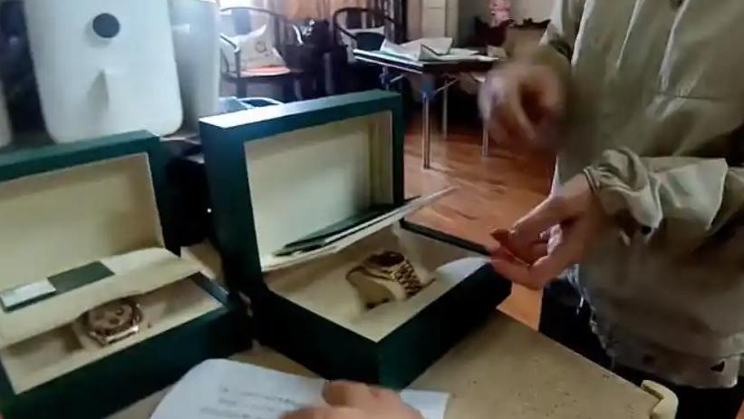

10月9日，加拿大鹅（Canada Goose）合作摄制团队在浙江宁波北仑福泉山拍摄2027年新年产品广告。10月11日，网友徐先生在骑行途中发现山上散落大量垃圾，其中包括盒饭、食品包装袋、矿泉水瓶，以及印有品牌名的2027年广告拍摄计划单，拍摄日期清晰标注为10月9日。
10月12日晚，加拿大鹅回应：已关注到福泉山拍摄现场的环境清理问题，对"合作摄制团队未能妥善清理、遗留垃圾并对周边自然环境造成影响"深表歉意；摄制团队已返回现场完成全面清理，并开展净山行动。
原本是一次标准的品牌公关危机，却因"环保人设"的反差被迅速放大。
所以公众愤怒的不是"拍了支广告"，而是一支可能主打自然的广告，先把自然弄脏了。
表层看，是外包团队疏忽、品牌背锅；但更深一层，是加拿大鹅长期把"可持续""环保"作为核心叙事之一，强调 responsibly sourced（负责任采购）、环保材料与生态保护。当一支广告的拍摄现场与"环保"叙事背道而驰，公众感受到的是承诺与行为的落差。
第二个关键点在于"外包≠免责"。品牌把拍摄交给摄制团队，现场管理、垃圾清运的责任边界可以约定，但对外呈现上，山上的垃圾贴着你的计划单——消费者对品牌的记忆，不会区分"是外包干的"。
这也提醒所有企业：ESG 不是年报里的漂亮话，而是每一次外拍、每一处细节的兑现。一次失约，足以抵消十次宣讲。
人设越亮，越怕灰尘；环保承诺的信用，是用一次次小事攒起来的，也经不起一次弄脏。
从品牌管理视角看，这起事件的处理路径是标准的：迅速回应、承认问题、现场清理、承诺行动。但光有表态不够——真正的修复，是建立外拍全流程的环保闭环：拍摄前登记、拍摄中监督、拍摄后验收清场，并把责任落到合同条款与第三方核查。
对户外拍摄行业而言，这更是一堂公开课。自然景区、山地、保护区本就生态脆弱，任何剧组、品牌的外景作业都应把"无痕"作为底线。监管、景区与品牌三方联动，才能避免"拍完就走、留下烂摊子"。
对消费者来说，这起事件也提供了一种审视角度：看一个品牌，不只看它说什么，更看它在镜头之外、无人监督时怎么做。
一次净山能清掉山上的垃圾，清不掉信任的裂痕——修补它，得靠长期的言行一致。
回到10月9日的福泉山：摄制团队拍完了2027年新品的画面，却把盒饭、包装和印着品牌名的计划单留在了山上。
加拿大鹅的致歉和净山，把山上的垃圾清了，但留给品牌的思考题才刚开始：当"环保"成为卖点，它就不再是可随意兑现的装饰，而是必须守住的承诺。一支好广告，不该以弄脏一片山为代价。愿每一次外拍离场时，山还是原来的山。